📘 HTML TỪ TÀI LIỆU HỌC TẬP
Môn Toán - Lớp 12
📘 BÀI TẬP TRẢ LỜI NGẮN BÀI 1
Question 1. Biết đường thẳng đi qua hai điểm cực trị của đồ thị của hàm số $y=-x^3+3x^2+9x+1$ là $ax+by+4=0$. Tính $a+2b$.
Question 2. Biết đồ thị hàm số $y=ax^3+bx^2+cx+d$ có hai điểm cực trị $A(1;-7), B(2;-8)$. Tính $y(-1)$.
Question 3. Cho hàm số $y=ax^3+bx^2+cx+2, (a;b;c \in \mathbb{R})$ có bảng xét dấu như sau:
 Có bao nhiêu số dương trong các số $a;b;c$?
Có bao nhiêu số dương trong các số $a;b;c$?
Question 4. Máng trượt của một cầu trượt cho trẻ em được uốn từ một tấm kim loại có bề rộng 80 cm, mặt cắt được mô tả ở Hình 2. Nhà thiết kế khuyến cáo, diện tích của mặt cắt càng lớn thì càng đảm bảo an toàn cho trẻ em.
 Gọi S là diện tích mặt cắt. Với x đạt giá trị bằng bao nhiêu thì cầu trượt đảm bảo an toàn nhất cho trẻ em?
Gọi S là diện tích mặt cắt. Với x đạt giá trị bằng bao nhiêu thì cầu trượt đảm bảo an toàn nhất cho trẻ em?
Question 5. Giả sử doanh số (tính bằng số sản phẩm) của một sản phẩm mới (trong vòng một số năm nhất định) tuân theo quy luật logistic được mô hình hoá bằng hàm số $f(t)=\dfrac{5000}{1+5e^{-t}}, t \ge 0$ trong đó thời gian t được tính bằng năm, kể từ khi phát hành sản phẩm mới. Khi đó, đạo hàm $f'(t)$ là biểu thị tốc độ bán hàng. Hỏi sau khi phát hành bao nhiêu năm thì tốc độ bán hàng là lớn nhất? (quy tròn đến hàng phần trăm).
Question 6. Biết rằng tất cả các khoảng nghịch biến của hàm số $y=\dfrac{x^2+2x+2}{x+1}$ là hai khoảng $(a;b), (b;c)$ với $a
Question 7. Biết rằng đồ thị hàm số $y=x^4-2ax^2+b$ có một điểm cực trị là $(1;2)$. Tính khoảng cách giữa điểm cực đại và điểm cực tiểu của đồ thị hàm số đã cho (quy tròn đến hàng phần trăm).
Question 8. Biết rằng hai điểm cực trị của đồ thị hàm số $y=\dfrac{x^2+2x-3}{x^2+1}$ cùng với điểm $I(-\sqrt{5};-\sqrt{5})$ tạo thành một tam giác. Diện tích tam giác đó bằng (kết quả làm tròn đến hàng phần trăm)
Question 9. Xí nghiệp A sản xuất độc quyền một loại sản phẩm. Biết rằng hàm tổng chi phí sản xuất là $TC=x^3-77x^2+1000x+40000$ và hàm doanh thu là $TR=-2x^3+1312x$, với x là số sản phẩm. Lợi nhuận của xí nghiệp A được xác định bằng hàm số $f(x)=TR-TC$, cực đại lợi nhuận của xí nghiệp A khi đó đạt bao nhiêu sản phẩm?
Question 10. Hàm số $y=\log_3(x^2-2x)$ nghịch biến trên khoảng $(-\infty;a)$ có độ dài lớn nhất. Khi đó a bằng?
Question 11. Lát cắt ngang của một vùng đất ven biển được mô hình hoá thành một hàm số bậc ba $y=f(x)$ có đồ thị như hình vẽ (đơn vị độ dài trên các trục là km). 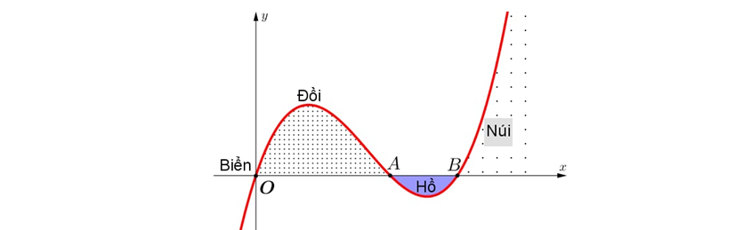 Biết khoảng cách hai bên chân đồi $OA=2$ km, độ rộng của hồ $AB=1$ km và ngọn đồi cao 528 m. Tìm độ sâu của hồ (tính bằng mét) tại điểm sâu nhất? (làm tròn đến hàng đơn vị).
Question 12. Tìm tất cả các khoảng nghịch biến của hàm số $y=\dfrac{x^2+2x+2}{x+1}$.
Question 13. Hằng ngày mực nước của một con kênh lên xuống theo thủy triều. Độ sâu $h(m)$ của mực nước trong kênh tại thời điểm $t(h)$ ($0 \le t \le 24$) trong ngày được xác định bởi công thức $h=2\cos(\dfrac{\pi t}{12}+\dfrac{\pi}{3})+5$. Gọi $(a;b)$ là khoảng thời gian trong ngày mà độ sâu của mực nước trong kênh tăng dần. Tính giá trị của $a+b$.
Question 14. Xí nghiệp A sản xuất độc quyền một loại sản phẩm. Biết rằng hàm tổng chi phí sản xuất là $TC=x^3-77x^2+1000x+40000$ và hàm doanh thu là $TR=-2x^3+1312x$, với x là số sản phẩm. Lợi nhuận của xí nghiệp A được xác định bằng hàm số $f(x)=TR-TC$, cực đại lợi nhuận của xí nghiệp A khi đó đạt bao nhiêu sản phẩm?
Question 15. Khi loại thuốc A được tiêm vào bệnh nhân, nồng độ mg/l của thuốc trong máu sau x phút được xác định bởi công thức: $C(x)=\dfrac{30x}{x^2+2}$. (Calculus. Cengage Learning) Để đưa ra những lời khuyên và cách xử lí phù hợp cho bệnh nhân, ta cần tìm khoảng thời gian mà nồng độ của thuốc trong máu đang tăng. Em hãy cho biết hàm nồng độ thuốc trong máu $C(x)$ đạt giá trị cực đại là bao nhiêu trong khoảng thời gian 6 phút sau khi tiêm?
Question 16. Một tấm bạt hình vuông cạnh 20m như hình vẽ dưới đây. Người ta dự tính cắt phần tô đậm của tấm bạt rồi gập và may lại, nhằm mục đích phủ lên tháp đèn trang trí để tránh hư hại tháp khi trời mưa.
 Biết khối chóp hình thành sau khi gập và may lại cần thể tích lớn nhất thì mới phủ kín tháp đèn. Hỏi phần diện tích tấm bạt bị cắt là bao nhiêu để đảm bảo yêu cầu trên.
Biết khối chóp hình thành sau khi gập và may lại cần thể tích lớn nhất thì mới phủ kín tháp đèn. Hỏi phần diện tích tấm bạt bị cắt là bao nhiêu để đảm bảo yêu cầu trên.
Question 17. Cho hàm số $y=f(x)$. Hàm số $y=f'(x)$ liên tục và có đồ thị trên $\mathbb{R}$ như hình vẽ 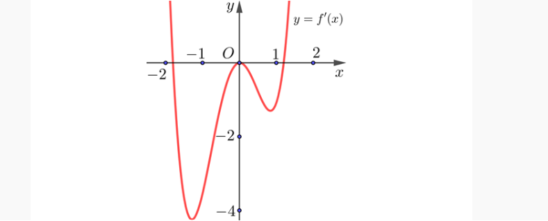 Giả sử hàm số $y=f(x)$ nghịch biến trên khoảng $(a;b)$. Trong khoảng $(a;b)$ có bao nhiêu giá trị nguyên nhỏ hơn 2024.
Question 18. Cho hàm số $f'(x)=x(x^2-1)(x+1)^3$. Hàm số $y=f(x)$ có bao nhiêu điểm cực đại?
Question 19. Cho hàm số $y=f(x)$ xác định và liên tục trên $\mathbb{R}$. Hàm số $y=f'(x)$ có bảng biến thiên như sau
 Hàm số $y=f(x)$ có bao nhiêu điểm cực trị?
Hàm số $y=f(x)$ có bao nhiêu điểm cực trị?
Question 20. Có tất cả bao nhiêu giá trị nguyên của tham số $m$ để hàm số $y=x^3-3mx^2+3(2m-1)+1$ đồng biến trên $\mathbb{R}$.
Question 21. Có tất cả bao nhiêu giá trị nguyên của tham số $m$ để hàm số $y=\dfrac{m}{3}x^3-2mx^2+(3m+5)x$ đồng biến trên $\mathbb{R}$.
Question 22. Cho hàm số $y=\dfrac{mx-2m+3}{x+m}$ với $m$ là tham số. Gọi S là tập hợp tất cả các giá trị nguyên của $m$ để hàm số nghịch biến trên khoảng $(2;+\infty)$. Tìm số phần tử của S.
Question 23. Có bao nhiêu giá trị nguyên của tham số m để hàm số $y=\dfrac{x+18}{x+4m}$ nghịch biến trên khoảng $(2;+\infty)$?
Question 24. Có bao nhiêu giá trị nguyên dương của tham số $m$ để hàm số $y=\dfrac{x^2}{2}-mx+\ln(x-1)$ đồng biến trên khoảng $(1;+\infty)$?
Question 25. Cho hàm số $f(x)=x^2-2x$. Đặt $g(x)=f(f(x))+1$. Giả sử hàm số $y=g(x)$ đồng biến trên khoảng $(a;b)$ với $a \in \mathbb{R}, b \in \mathbb{R}$. Tính $a+b\sqrt{2}$.
Question 26. Cho hàm số $y=f(x)$ xác định và liên tục trên $\mathbb{R}$. Hàm số $y=f'(x)$ có đồ thị như hình vẽ
 Giả sử hàm số $g(x)=2f(x^2-3x)+5$ nghịch biến trên khoảng $(a;b)$ với $a \in \mathbb{Q}, b \in \mathbb{Q}$. Tính $2a+3b$.
Giả sử hàm số $g(x)=2f(x^2-3x)+5$ nghịch biến trên khoảng $(a;b)$ với $a \in \mathbb{Q}, b \in \mathbb{Q}$. Tính $2a+3b$.
Question 27. Giả sử sự lây lan của một loại virus ở một địa phương có thể được mô hình hoá bằng hàm số $N(t)=-t^3+12t^2, 0 \le t \le 12$, trong đó N là số người bị nhiễm bệnh (đơn vị là trăm người) và t là thời gian (tuần). Gọi $(a;b)$ là khoảng thời gian lâu nhất mà số người bị nhiễm bệnh tăng lên. Tính giá trị $P=2a^2-b^2$.
Question 28. Gọi A, B là hai điểm cực trị của đồ thị hàm số $f(x)=e^{2x}-5e^x+2x+1$. Tính diện tích của tam giác OAB. Kết quả làm tròn đến hàng phần trăm.
Question 29. Gọi A, B, C là ba điểm cực trị của đồ thị hàm số $f(x)=2\ln(x^2+1)-x^2-1$. Tính $P=AB^2+BC^2+CA^2$. Kết quả làm tròn đến hàng phần trăm.
Question 30. Cho hàm số bậc ba $y=f(x)$ có đồ thị như hình bên 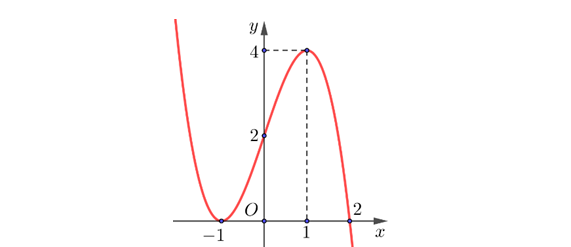 Tìm số điểm cực trị của hàm số $y=f(\ln(e^2+x^2)-1)$.
Question 31. Trong một thí nghiệm y học, người ta cấy 1000 vi khuẩn vào môi trường dinh dưỡng. bằng thực nghiệm, người ta xác định được số lượng vi khuẩn thay đổi theo thời gian bởi công thức: $N(t)=1000+\dfrac{100t}{100+t^2}$ (con), trong đó t là thời gian tính bằng giây. Hỏi thời gian bằng bao nhiêu để số lượng vi khuẩn đạt cực đại?
Question 32. Giả sử tổng chi phí sản xuất x $(0 \le x \le 50)$ đơn vị sản phẩm A mỗi ngày tại một nhà máy được cho bởi công thức $C(x)=\dfrac{x^2}{4}+3x+400$ (nghìn đồng) và toàn bộ chúng được bán hết với giá $(900-6x)$ nghìn đồng một sản phẩm. Tìm mức sản lượng (đó là số lượng sản phẩm được sản xuất) để chi phí trung bình tính trên mỗi đơn vị sản phẩm là đạt cực tiểu.
Question 33. Cho hàm số $y=x^3-3x^2+5$ có đồ thị (C). Tính độ dài đoạn thẳng nối hai điểm cực trị của đồ thị (C).
Question 34. Biết hàm số $y=ax^3+bx^2+cx+d$ có hai điểm cực trị là $(-1;18)$ và $(3;-16)$. Tính giá trị biểu thức $P=a+b+c+d$.
Question 35. Đồ thị của hàm số $y=x^3-3x^2-9x+1$ có hai điểm cực trị là A và B. Tính khoảng cách từ gốc toạ độ O đến đường thẳng AB.
Question 36. Biết đồ thị (C) của hàm số $y=\dfrac{x^2-4x+5}{x-1}$ có hai điểm cực trị. Đường thẳng đi qua hai điểm cực trị của đồ thị hàm số (C) tạo với hai trục toạ độ một tam giác của diện tích S bằng bao nhiêu?
Question 37. Gọi A,B,C là ba điểm cực trị của đồ thị hàm số $y=x^4-2x^2+4$. Bán kính đường tròn nội tiếp tam giác ABC bằng bao nhiêu?
Question 38. Cho hàm số $f(x)$ liên tục trên $\mathbb{R}$ và có bảng xét dấu $f'(x)$ như sau. 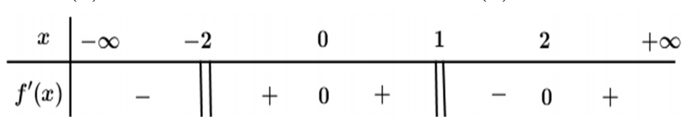 Hàm số có bao nhiêu điểm cực trị?
Question 39. Cho hàm số $y=ax^3+bx^2+cx+d$ đạt cực trị tại các điểm $x_1, x_2$ thỏa mãn $x_1 \in (-1;0), x_2 \in (1;2)$. Biết hàm số đồng biến trên khoảng $(x_1;x_2)$. Đồ thị hàm số cắt trục tung tại điểm có tung độ âm. Trong các số a,b và c có bao nhiêu số âm?
Question 40. Cho hàm số $f(x)$ liên tục trên $\mathbb{R}$ có $f(-1)=0$ và có đồ thị hàm số $y=f'(x)$ như hình vẽ bên. 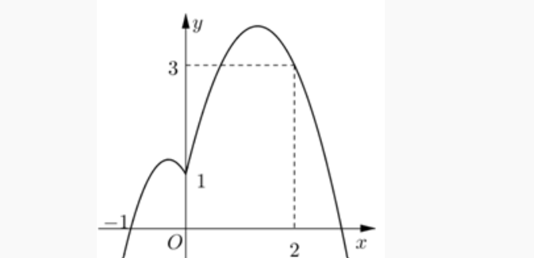 Xác định khoảng đồng biến của hàm số $y=|2f(x-1)-x^2|$.
Question 41. Cho hàm số $y=f(x)$ có đạo hàm liên tục trên $\mathbb{R}$. Biết hàm số $f'(x)$ có đồ thị như hình vẽ. Gọi S là tập hợp các giá trị nguyên của $m$ thuộc đoạn $[-5;5]$ để hàm số $g(x)=f(|x|+m)$ nghịch biến trên khoảng $(1;2)$. Hỏi S có bao nhiêu phần tử? 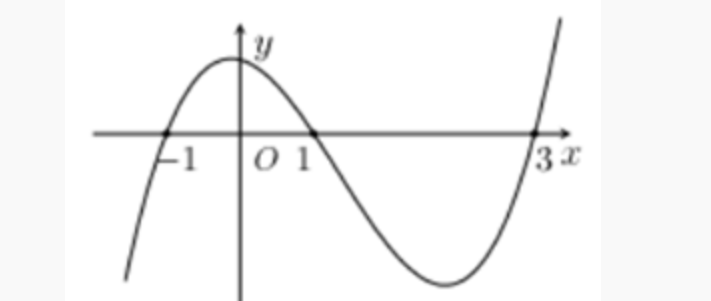
Question 42. Cho hàm số $f(x)=x^4+2x^2+1$. Có bao nhiêu giá trị nguyên của tham số $m \in [0;10]$ để hàm số $g(x)=f(3|x-m|+m^2)$ nghịch biến trên $(-\infty;1)$?
Question 43. Có bao nhiêu giá trị nguyên của tham số $m \in (-20;20)$ để hàm số: $y=|x^3-2mx+2m^2-1|$ đồng biến trên khoảng $(1;5)$?
Question 44. Cho hàm số $f(x)=\dfrac{1}{3}x^3+\dfrac{1}{2}(4m+5)x^2-(3m^2+5m)x+\dfrac{2}{3}$. Có bao nhiêu giá trị nguyên của tham số $m$ thuộc $[-10;10]$ để hàm số nghịch biến trên khoảng $(1;2)$?
Question 45. Cho hàm số $y=f(x)$ có đạo hàm liên tục trên $\mathbb{R}$. Biết hàm số $y=f'(x)$ có đồ thị như hình vẽ. Gọi S là tập hợp các giá trị nguyên $m \in [-5;5]$ để hàm số $g(x)=f(x+m)$ nghịch biến trên khoảng $(1;2)$. Hỏi S có bao nhiêu phần tử? 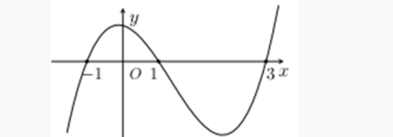
Question 46. Cho hàm số $y=f(x)$ có đạo hàm liên tục trên $\mathbb{R}$ và có đồ thị $y=f'(x)$ như hình vẽ. Đặt $g(x)=f(x-m)-\dfrac{1}{2}(x-m-1)^2+2019$, với $m$ là tham số thực. Gọi S là tập hợp các giá trị nguyên dương của $m$ để hàm số $y=g(x)$ đồng biến trên khoảng $(5;6)$. Tổng tất cả các phần tử trong S bằng 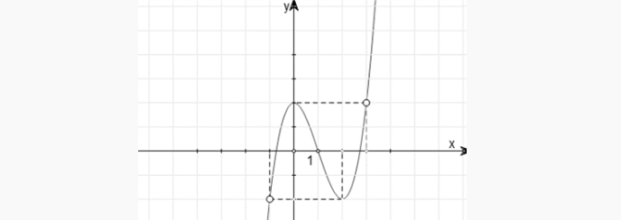
Question 47. Cho hàm số $y=ax^4+bx^3+cx^2+dx+e, a \ne 0$. Hàm số $y=f'(x)$ có đồ thị như hình vẽ 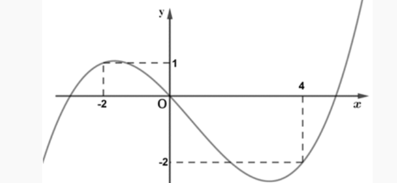 Gọi S là tập hợp tất cả các giá trị nguyên thuộc khoảng $(-6;6)$ của tham số $m$ để hàm số $g(x)=f(3-2x+m)+x^2-(m+3)x+2m^2$ nghịch biến trên $(0;1)$. Khi đó, tổng giá trị các phần tử của S là
Question 48. Cho hàm số $y=f(x)$ có đạo hàm liên tục trên $\mathbb{R}$ và có đồ thị $y=f'(x)$ như hình vẽ bên. Đặt $g(x)=f(x-m)-\dfrac{1}{2}(x-m-1)^2+2019$, với $m$ là tham số thực. Gọi S là tập hợp các giá trị nguyên dương của $m$ để hàm số $y=g(x)$ đồng biến trên khoảng $(5;6)$. Tổng tất cả các phần tử trong S bằng: 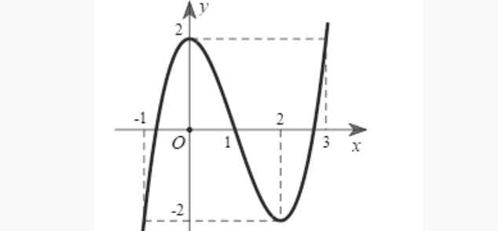
Question 49. Cho hàm số $f(x)$ liên tục trên $\mathbb{R}$ và có đạo hàm $f'(x)=x^2(x-2)(x^2-6x+m)$ với mọi $x \in \mathbb{R}$. Có bao nhiêu số nguyên $m$ thuộc đoạn $[-2020;2020]$ để hàm số $g(x)=f(1-x)$ nghịch biến trên khoảng $(-\infty;-1)$?
Question 50. Cho hàm số $f(x)$ xác định và liên tục trên $\mathbb{R}$. Hàm số $y=f'(x)$ liên tục trên $\mathbb{R}$ và có đồ thị như hình vẽ. 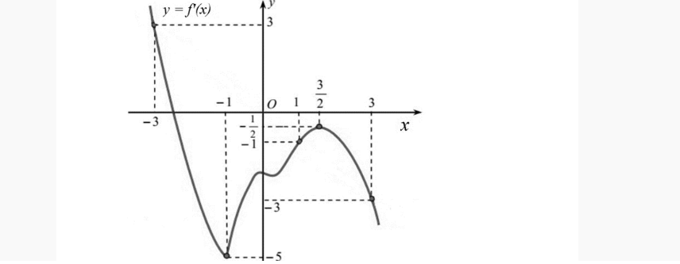 Xét hàm số $g(x)=f(x-2m)+\dfrac{1}{2}(2m-x)^2+2020$, với $m$ là tham số thực. Gọi S là tập hợp các giá trị nguyên dương của $m$ để hàm số $y=g(x)$ nghịch biến trên khoảng $(3;4)$. Hỏi số phần tử của S bằng bao nhiêu?